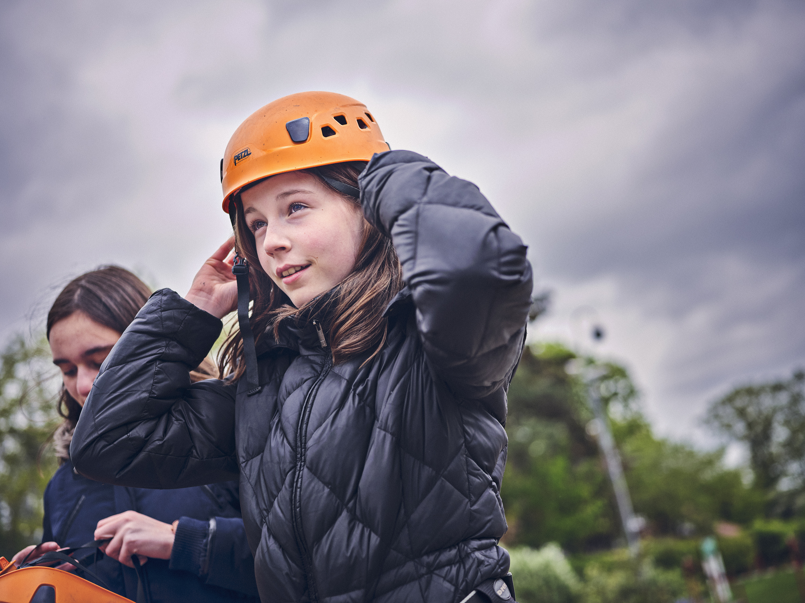
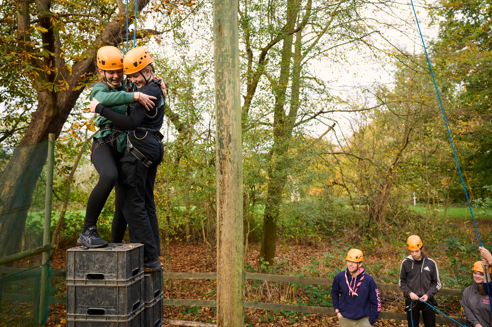
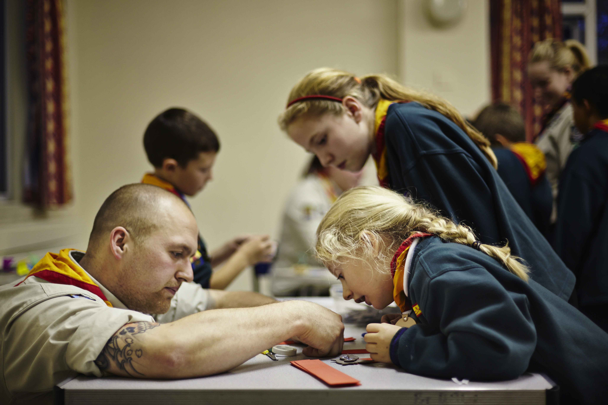
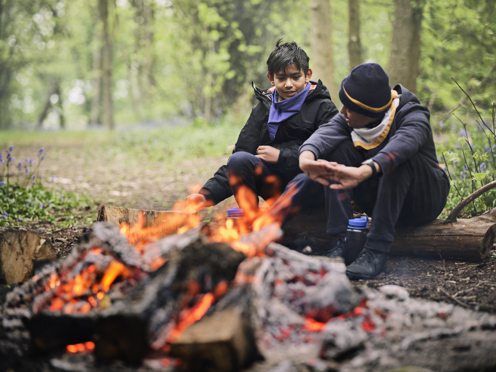

Avaliable Badges

Join Us Form

Welcome to our Scout Section, where adventure and personal growth converge!
Our scouts embark on a journey of a lifetime, discovering the world around them while developing
essential life skills. Every Friday, from 7:00 pm to 9:00 pm, our vibrant community gathers to create
memories that last a lifetime.
At the 4 th East Grinstead, we take pride in our unique Greenfield camping style. Our scouts not only
learn scouting values but also engage in hands-on experiences that foster teamwork and key life
skills like cooking. Our commitment to the outdoors empowers young minds to embrace challenges,
honing skills that extend beyond the scout hall. From knot-tying to astromony, our diverse program
ensures that every scout discovers their potential. Through exciting activities and projects, we instill
a sense of adventure, resilience, and camaraderie.
Join us at the 4 th East Grinstead and be part of a community where the spirit of scouting comes alive.
Embrace the outdoors, make lifelong friends, and equip yourself with the skills for a lifetime of
success. We can't wait to welcome you to our troop!
Chris White – Scout Section Leader



